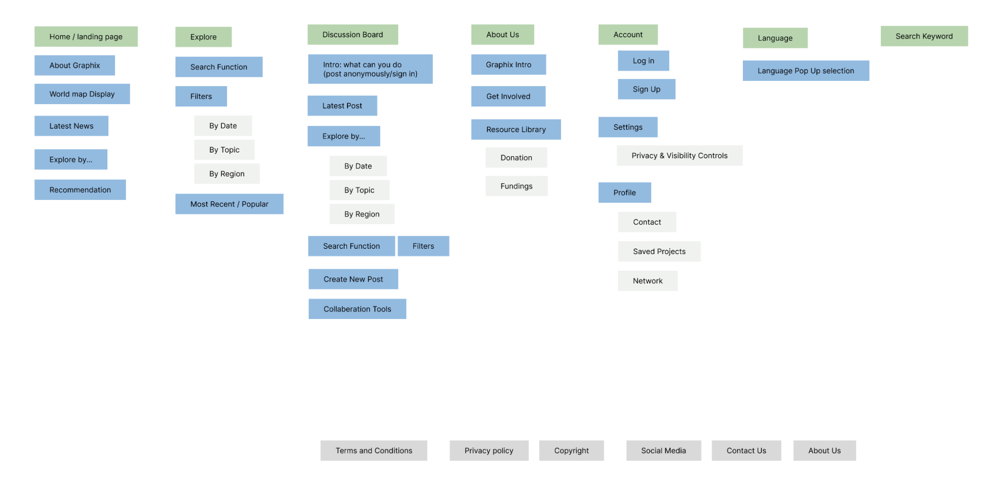
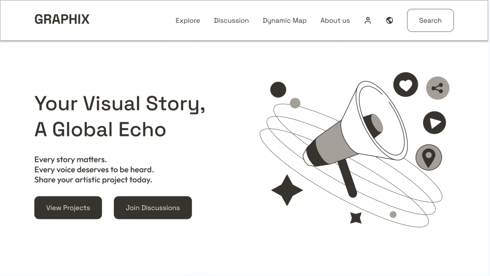
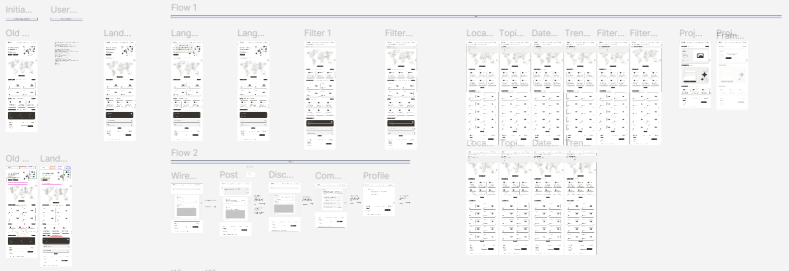

Overview
Nowadays, young people have more opportunities to participate in social change by sharing
information and joining activism efforts. However, many activists struggle with limited
access to reliable information, and face a lack of educational resources and challenges
in collaboration - All make it difficult for a meaningful change.
Therefore, the Graphix project aims to design a multilingual online platform to empower young
adult activists through visual storytelling, comics, and digital media. The goal is to create
a space where activists can connect, share knowledge, and amplify their impact
globally.
To achieve this, we conducted online research, used surveys to learn about
activists' engagement, built user flows, and designed clickable prototypes.
Team members - Yuxin Chen, Xiangruixue Leng, Zijie Wang, and Chi-shiun Yang (me).
Understanding Users' Needs
Before creating surveys and designing the prototype, we did online research about the existing platforms
related to activism, and had conversations with experts in the field. Here are the main problems we identified:
- There is no existing centralized, multilingual platform where young activists can collaborate effectively across continents.
- Visual graphics or comics are underutilized in traditional activist advocacy websites.
- Existing platforms prioritize social media-driven activism, which lacks structured educational content and long-term engagement tools.
- Activists face barriers such as information overload, unreliable resources, language & translation difficulties, and security concerns.
After this, we decided to use surveys to validate our user needs and identify pain points. In this case, the
platform will align with real user behaviors and expectations. Here are the research questions we would like to explore:
- What factors affect the young adult's ability to engage in activism or learn about human rights issues through online formats?
- What factors affect young adults' interest in learning about human rights through visual storytelling, such as graphics or comics?
- How’s their current ability to learn about different activism topics through online platforms?
Through 300+ surveys we collected all across the world, we got these key findings:
-
The motivations when using online platforms are to connect with like-minded
communities, reach a global audience, and receive real-time feedback. They seek
partners with shared goals, want to amplify their impact, and need timely responses to
assess whether their actions are making a difference.
-
The top barriers regarding people’s willingness to engage in activism are privacy and security concerns, the
fear of data leaks and cyber threats, and difficulty finding trustworthy information affect.
Furthermore, due to a lack of accessible activist networks, initiating or maintaining collaboration is even more challenging.
-
When it comes to networking, participants identified time constraints, language barriers,
and difficulty verifying reliable work as key challenges. Financial limitations are another
obstacle to learning human rights topics they want to know about, as well as restricted
access to quality learning materials. Information overload makes it difficult for users to
navigate vast content, while security concerns prevent trust from building in the form of
online learning.
-
A large part of the participants agree on the effectiveness of graphic use in advocacy.
Visual storytelling plays a critical role and they recognized its ability to capture attention,
enhance retention, and break language barriers. However, there are concerns about
misinterpretation, oversimplification, and lack of depth.
Prototyping
Our design goal is to develop a mid-fi prototype of the platform while focusing on key UX flows,
prioritizing usability, safety, and inclusivity. To fulfill this, we consolidated the main features
and turned the needed categories into an information architecture.

The landing page of the wireframe of the prototype includes:

- Navigation bar including 4 categories, language settings, login option, and search button
- Header with a mission statement and call-to-action buttons
- Interactive world map embedded to highlight projects
- Sections for featuring the latest update news, exploring topics, and recommendations
- Standard website footer including basic information
The user flows of the clickable prototype are built based on the journey maps we created of these two categorized user groups:
- People who would like to share their personal experiences and stories and find like-minded individuals to connect to
- People who are not actively participating in/new to activism but would like to explore various topics and learn more

Figure: User flows
Evaluation & Next Steps
To evaluate how users navigate the website and identify confusion points and areas for improvement,
we conducted a first round of usability testing. The test focused on evaluating the clarity of our navigation,
interface elements, and terminology. The feedback revealed several areas for improvement:
-
Wording Issues: Participants expressed confusion around certain terms, such
as “Dynamic Map,” “Discussion,” and “Recommendation”, which lacked clear
meaning or actionable purpose. This indicated a need for more intuitive labeling
that better reflects user expectations.
-
UI & Layout: Text sizes in some areas were too small, and the search bar was
not visually distinct enough from surrounding elements, making it appear more
like a button than a text input field. Additionally, inconsistencies in the footer
layout affected visual flow.
-
Feature Visibility: Originally, the language switch icon, shown as a globe
symbol, was not easily recognized, and all 4 participants had trouble finding it.
Participants preferred a clearer indication, like “(Language)/(Region)” for
language settings. Similarly, the login and sign-up options were not prominent
enough for users to locate quickly.
Therefore, we change the navigation bar/category wording, globe icon to Location/Language, and section description
, login option, view more button replacement, and feature description. We also wrote a design guideline document
as well as another user testing plan, including interviews and a post-session questionnaire,
for future designers and developers to carry this work forward in the platform’s next development phase.
Takeaways
The experience of working with actual clients and users is very valuable for me.
I have learned a lot throughout the process, and here are three key takeaways:
- Communication is essential in projects, especially when having different perspectives and expectations.
To create a better product, we should listen to others respectfully, then go through and our thoughts
carefully to avoid misunderstanding.
-
To ensure future team members can easily continue to work on the project,
a clear and reusable design file and supplementary documents can provide full support.
-
Primary user research is very important, especially when the topics are more niche.
With a broad range of participants, including activists, educators, and students, we understand
not only the motivations behind online activism but also the barriers they face, informing a truly
inclusive and globally conscious design direction.